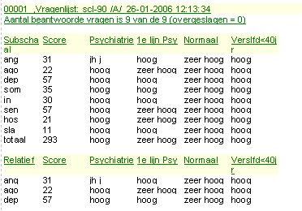
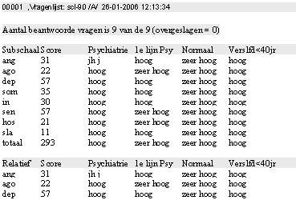
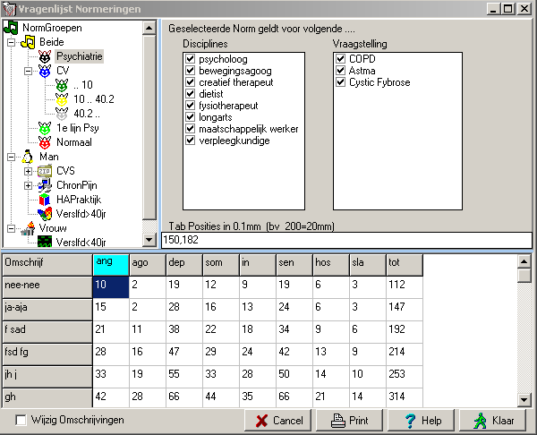
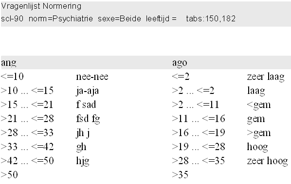
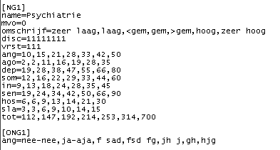
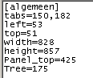

Normen
Inleiding
Iedere subschaal-score kan worden vergeleken met één of meerdere normen. Bij iedere norm kan worden gespecificeerd, voor welke sexe deze geldt (man/vrouw of beide), voor welke vraagstelling deze geldig is en voor welke betrokken disciplines deze norm informatie bevat. Vanaf versie 16.0 kunnen de normen ook leeftijds-afhankelijk worden toegepast.
In zowel de oude als de nieuwe rapportgenerator worden de subschaal scoren uitgezet tegen alle relevante normen (desgewenst zowel absoluut als relatief). In de nieuwe rapport generator zijn de individuele norm-items ook beschikbaar om als enkelvoudige waarde te worden gebruiktin grafieken en eigen gemaakte tabellen.
Rapport weergave
mogelijke weergave in nieuwe rapport
Daarnaast kunnen de individuele normscores gebruikt worden in eigen gemaakte tabellen en grafieken.
weergave in de oude rapportvorm
Normen
Klik met de rechter-muistoets op de onderste balk, kies nu NORMEN en het onderstaande scherm verschijnt in beeld.

Boven aan de linkerkant, is een boomstructuur weergegeven, waarin alle verschillende normgroepen zijn ondergebracht. De boom is verdeeld in 3 hoofdtakken, die de relevante sexe aangeven: Beide, Man / Vrouw. Deze hoofdtakken kunnen niet worden gewijzigd. Onder iedere sex-tak, kunnen 1 of meerdere normen worden gehangen. Zo hanger er in bovenstaande figuur 4 normen onder "Beide", Psychiatrie, CV, !e lijn Psy, en Normaal. Omdat de norm CV leeftijds-afhankelijk is, bevat deze tak een aantal subtakken, waarin de leeftijds-categorien gedefiniëerd zijn. De eerste leeftijds-categorie "..10", geldt voor de leeftijd van 0 tot 10 jaar. De tweede leeftijds-categorie "10..40.2" geldt vanaf 10 jaar tot 40 jaar en 2 maanden. Merk op dat het cijfer achter de komma dus niet geïnterpreteerd wordt als een decimale fractie, maar simpelweg als het aantal maanden.
De boomstructuur heeft alle standaard flexibiliteit, die normaal gesproken in windows aanwezig is: de labels van de normen kunnen gewoon worden ge-edit, door er op te klikken, waarna zich ter plekke een edit venster zal tonen. De boomstructuur ondersteunt verder "full drag & drop", dus gewoon slepen en laten vallen.
Als men in de boomstructuur een norm selecteert, verschijnen er in de tabel eronder de bijbehorende normgegevens. In de kolommen staan de verschillende subschalen vermeld. In de meest linkse kolom de feitelijk norm tekst (deze is dus afhankelijk van de geselekteerde kolom, maar ook identiek zijn voor alle subschalen), deze kan pas worden gewijzigd door eerst het hokje uiterest links onder aan te vinken.
Rechtsboven wordt per normgroep aangegeven, voor welke vraagstellingen en disciplines betreffende norm van toepassing is.
Ten behoeve van de layout in het rapport, kan nog worden aangegeven hoe groot de breedte van de kolommen voor de verschillende normen moet zijn. Vul daartoe de breedte (in 0.1 mm) in in de regel Tab Posities. Indien er minder waarden zijn ingevuld dan er kolommen zijn, wordt de laatste waarde herhaald. Dus in onderstaand voorbeeld, zal de eerste kolom een breedte van 3 cm hebben en alle volgende kolommen een breedte van 2 cm. De kolombreedten moeten onderling gescheiden worden door komma's !!
Het totale formulier is schaalbaar en de blauwe lijnen in de bovenstaande scherm zijn zogenaamde splitters, waarmee de optimale verdeling voor deze vragenlijst kan worden ingesteld. (Deze instellingen worden dus per vragenlijst per bewaard.)
Het is raadzaam na het invoeren / wijzigen van normen een afdruk te maken middels de knop print, omdat dan pas een goed overzicht van alle normen / subschalen en bijbehorende labels verkregen wordt (zie onderstaand plaatje).

Technische opbouw
Voor een snelle invoer kan het soms zinvol zijn de tabellen rechtstreeks in het bron normen bestand in te tikken. De opbouw van het norm bestand is sinds versie V16 sterk vereenvoudigd (maar de oude norm bestanden kunnen gewoon blijven worden gebruikt).

In bovenstaande tabel is de eerste norm (de bovenste uit de boomstructuur) weergegeven.
name = de naam van de norm
mvo = sexe (0=Beide, 1=Man, 2=Vrouw)
omschrijf = de normclassificatie, die in principe geldt voor alle subschalen. Ingeval 1 of meerdere subschalen een afwijkende norm classificatie nodig hebben, wordt deze gedefinieerd in een aparte sectie, zoals in bovenstaand overzicht is gedaan voor de subschaal "ANG".
disc = de disciplines waarvoor de norm geldt (1=geldig, 0=nvt)
vrst= de vraagstellingen waarvoor de norm geldt (1=geldig, 0=nvt)
daarna worden de grenswaarden van de afzonderlijke subschalen ingevoerd.
Daarnaast bevat het normbestand nog een algemene sectie, waarvan enkel het item "tabs" van belang is.
